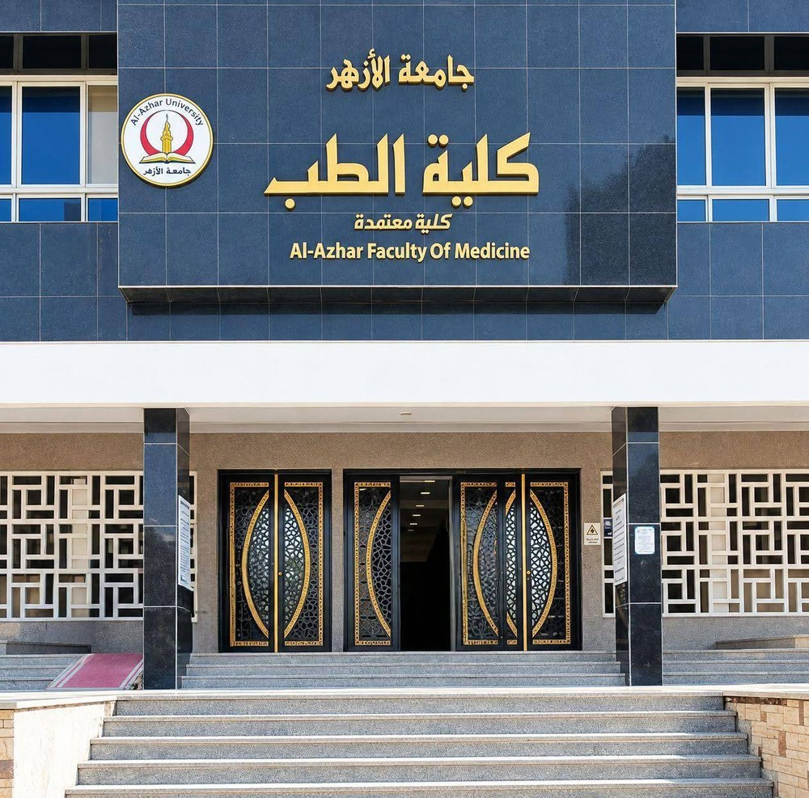
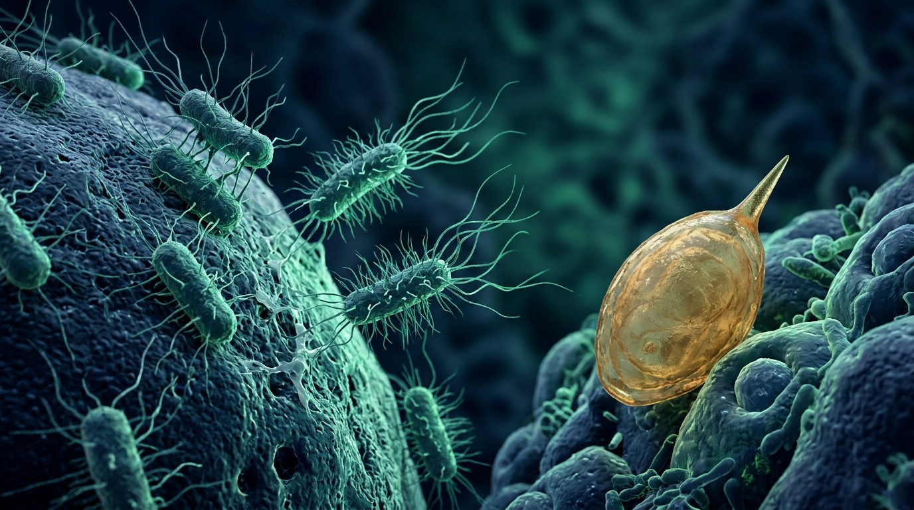

جامعة الأزهر - كلية الطب (بنين) بالقاهرة
Al-Azhar Faculty of Medicine | بنك الأسئلة والمحاكاة التفاعلية
موديول الكلى والجهاز البولي (Renal System)
بنك أسئلة وتدريب تفاعلي لطلاب كلية الطب، يغطي أسئلة موديول الكلى والجهاز البولي مقسمة حسب المواد مع إجاباتها النموذجية وشرحها.
780
إجمالي الأسئلة والحالات
6 + 1
أقسام المواد والحالات
100%
شرح وتوضيح لكل سؤال
164
صفحة موديول مغطاة

⚡ فسيولوجيا الكلى والجهاز البولي
وظائف الكبيبة الكلوية، معدل الترشيح GFR، آليات التدفق بالتيار المعاكس Countercurrent، إعادة امتصاص الصوديوم والماء، وتنظيم التوازن الحمضي القاعدي.

💊 فارماكولوجيا الكلى ومدرات البول
مدرات العروة (Furosemide)، الثيازايد، موفرات البوتاسيوم (Spironolactone)، مثبطات الأنهيدراز، آليات النقل، التداخلات الدوائية، وأسئلة علل الشهيرة.

🩺 باثولوجيا وأمراض الكلى والمسالك
أمراض الكبيبات (Nephrotic vs Nephritic)، التهاب الكبيبات سريع الترقي RPGN، داء التبدل الطفيف، اعتلال الكلى الغشائي، النخر الأنبوبي الحاد ATN، وأورام الكلى RCC.

🧫 ميكروبيولوجيا وطفيليات المسالك
عدوى المسالك البولية UTI و CAUTI، بكتيريا E. coli و Proteus mirabilis، تكون حصوات الستروفايت، زراعة البول، وطفيليات البلهارسيا البولية Schistosoma.

🔬 تشريح ونسيجيات الكلى والمسالك
حاجز الترشيح الكبيبي، الخلايا الرجلاء Podocytes، جهاز مجاورات الكبيبة JGA، ظهارة الحالب والمثانة Urothelium، مجاورات الكلى وعلم الأجنة.

🧬 كيمياء حيوية وحصوات الكلى
أيض وتكسير البيورينات، حمض اليوريك، النقرس Gout، متلازمة Lesch-Nyhan، التركيب الكيميائي لحصوات الكلى والبلورات وتوازن الأيونات.

📋 الحالات السريرية والأسئلة المقالية
قسم يجمع الحالات السريرية وسيناريوهات التشخيص والأسئلة المقالية وأسئلة التعليل مع الإجابات النموذجية والشرح بالإنجليزية.